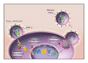
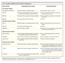
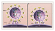
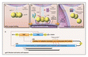

Review Article
Mechanisms of Disease
Novel Therapies Based on Mechanisms of HIV-1 Cell Entry
N Engl J Med 2003; 348:2228-2238May 29, 2003DOI: 10.1056/NEJMra022812
- Article
- References
- Citing Articles (89)
- Letters
Infection with human immunodeficiency virus type 1 (HIV-1), the retrovirus that causes the acquired immunodeficiency syndrome (AIDS), is one of the leading causes of death worldwide. All currently available antiretroviral agents inhibit essential HIV-1 enzymes — either the reverse transcriptase or the protease (Figure 1Figure 1The Life Cycle of Human Immunodeficiency Virus Type 1 (HIV-1), Showing Potential Targets for Antiretroviral Therapy.). Recent advances have markedly improved the outcome for many patients who receive these classes of antiretroviral drugs. However, the success of current therapy is limited by the emergence of drug-resistant viruses, the necessity of sustained adherence to complex regimens, and the potential for toxic effects. Novel classes of safe and effective agents with a low risk of cross-resistance with other antiretroviral drugs are needed.
Targeting viral entry may have advantages over the inhibition of steps in the viral life cycle after the cell has been infected. A better understanding of how HIV-1 binds to and enters cells has prompted a reappraisal of previous attempts to block viral entry and an evaluation of new approaches (Table 1Table 1Examples of Inhibitors of HIV-1 Cell Entry in Development.). In this article, we outline the steps involved in viral attachment and entry, provide an update on agents under development that have been designed to inhibit each of these steps, and consider the prospects of these compounds in the treatment of human immunodeficiency virus (HIV) infection.
HIV-1 Binding and Entry
Early Characterization of the Viral Envelope and CD4+ T-Cell Tropism
The initial characterization of HIV-1 centered on its tropism for mature human helper T lymphocytes, which express the CD4 (or T4) surface protein (also expressed on monocytes, dendritic cells, and brain microglia).1-4 Molecular studies demonstrated that, like other retroviruses, the HIV-1 particle is surrounded by a lipid bilayer, derived from the host cell and studded with viral glycoproteins (Figure 2Figure 2HIV-1–Binding Events and Potential Sites of Action for Various Viral-Entry Inhibitors.). The infectivity of HIV requires the surface glycoprotein subunit (gp120) and the transmembrane glycoprotein subunit (gp41) of gp160, a viral precursor protein. The two subunits are cleaved from gp160 by host-cell proteases and then reassembled as oligomeric structures (trimers) on the viral membrane (Figure 3AFigure 3Proposed Model of the gp41-Mediated Membrane-Fusion Step, Showing Sites of Action for Fusion Inhibitors in Development.).5,6
The amino acid sequence of gp120 contains five variable regions (V1 through V5), alternating with more conserved regions; the variable regions tend to be exposed on the viral surface.7,8 Noncontiguous regions of the gp120 molecule come together to form the CD4 binding site, and small deletions or substitutions in either CD4 or conserved regions of gp120 disrupt the binding of the virus.9-11
The design of inhibitors of viral entry must take into account the three-dimensional structure and the variability in the sequence of the intact wild-type HIV-1 envelope, rather than the linear sequences of denatured proteins or the envelopes of laboratory-adapted strains of HIV-1, which do not reliably predict the in vivo activity of investigational agents that block viral entry.
The Search for Entry Cofactors
Because CD4 alone is insufficient to permit the entry of HIV-1, it has long been suspected that additional receptors or other factors are required. Although most HIV-1 isolates successfully infect primary helper T cells, individual viral isolates have a range of tropisms (for example, in vitro, some preferentially infect macrophages over T-cell lines) and cause varying degrees of cell fusion (formation of syncytia or multinucleated giant cells) in T-cell lines. Amino acid residues within conserved V3-loop sites of gp120 were known to affect membrane fusion,12,13 but the basis of the differences in tropism was until recently poorly understood. Important clues to the “coreceptor” mystery arose from the discovery that β-chemokines (macrophage inflammatory proteins 1α and 1β [MIP-1α and MIP-1β], as well as RANTES [regulated upon activation normal T-cell expressed and secreted]), which are chemotactic cytokines produced by macrophages, activated T cells, and natural killer cells, suppress the replication of some strains of HIV-1.14
Chemokine Coreceptors (Cc Chemokine Receptor 5 and CXC Chemokine Receptor 4)
After the seminal discovery by Feng and colleagues that a G-protein–coupled chemokine receptor, CXC chemokine receptor 4 (CXCR4), was the key to cellular entry for viruses that grow well in cultured T-cell lines (X4 viruses),15 several groups of researchers rapidly confirmed that chemokine receptors were the missing link in our understanding of HIV-1 entry (Figure 2). The expression of CXCR4 made otherwise impenetrable CD4+ cell lines susceptible to productive HIV-1 infection. CC chemokine receptor 5 (CCR5), a β-chemokine receptor with a seven-transmembrane-protein structure similar to that of CXCR4, was found to serve as a coreceptor for non–syncytium-inducing or macrophage-tropic HIV-1 (R5 viruses).16,17 Chemokine receptors are the primary binding sites for many related retroviruses, and HIV-1 can be genetically modified to allow CD4-independent cell entry,18 suggesting that CXCR4 and CCR5 are the primordial receptors, rather than just cofactors.19
HIV-1 isolates of the R5 type have been implicated in most cases of sexually transmitted HIV infection, whereas X4 viruses, which replicate best in T-cell lines, often predominate in the later stages of HIV disease and may be associated with rapid progression to AIDS and death.20,21 Clinical isolates may contain mixtures of R5 and X4 viruses, and some individual viral strains (R5X4, or dual-tropic viruses) can use either the CXCR4 (X4-virus) or CCR5 (R5-virus) receptor.22 As previous experiments have suggested, V3-loop amino acid sequences in gp120 are major determinants of chemokine-receptor affinity.23,24 Although other chemokine receptors (CC chemokine receptors 2, 3, and 8, BOB, and others) can facilitate the entry of specific HIV-1 variants in vitro, all clinical isolates of HIV-1 use CCR5, CXCR4, or both for entry.25
Naturally occurring host defects in CCR5 expression have demonstrated the clinical significance of these receptors. A homozygous deletion that prevents CCR5 expression occurs disproportionately among persons who are frequently exposed to HIV-1 but who nonetheless remain uninfected.26 Heterozygous or partial mutation of a gene responsible for CCR5 expression on the cell surface does not block infection but does provide some protection from disease progression.27 Rare cases of infection in persons with a homozygous deletion of the gene responsible for CCR5 expression appear to be caused by X4 viruses.28
Membrane Fusion
The final step in viral entry, the fusion of the viral envelope with the cell membrane, is mediated by gp41. The molecular sequence of gp41 includes “heptad-repeat” regions (HR1 and HR2), reflecting the presence of periodic hydrophobic regions found in α-helical “coiled-coil” structures.29,30 Mutations in the HR regions interfere with the fusion property of gp41.31
A model of gp41-mediated membrane fusion analogous to the “spring-loaded” mechanism of influenzavirus has been proposed. After influenzavirus attaches to a target cell and enters the acid-rich endosome, the conformation of the hemagglutinin protein changes, shifting a “fusion peptide” into favorable position for the mediation of fusion.32 The model predicts that the gp120–gp41 trimer holds each gp41 in a high-energy configuration, with the fusion peptide pointed inward, toward the viral surface (Figure 3A). The binding of gp120 to CD4 and chemokine receptors is thought to release gp41 from this configuration, causing the fusion peptide to spring outward toward the cell membrane (Figure 3B). Still in their trimeric association, the HR1 regions then fold over into the hydrophobic groove formed by the three corresponding HR2 regions, forming a stable six-helix bundle, thus bringing viral and cell membranes into proximity for fusion and entry (Figure 3C).33
Crystallizing the Dynamic Roles of the Viral Envelope Proteins
Partial x-ray crystallization of the HIV-1 glycoproteins, in complex with receptors, sheds light on the three-dimensional interactions between viral and host components during binding and entry.19 This imaging of the complexes has confirmed the sequential conformational changes that follow the binding of the virus to CD4 and chemokine receptors and has suggested the occurrence of several interdependent steps in the process of viral entry.
Inhibition of Viral Entry
Inhibiting the Interaction of GP120 with the CD4 Molecule
Initial attempts to block HIV entry focused on the interaction between gp120 and CD4. Recombinant soluble CD4 (rsCD4), which was developed as a viral-attachment decoy, demonstrated potent inhibition of HIV-1 infection in vitro.34,35 In the clinical setting, however, rsCD4 had negligible activity except at very high doses.36-39 A chimeric molecule consisting of recombinant CD4 and gamma globulin had an extended half-life yet had little or no activity when administered with zidovudine.40 Despite these failures, new inhibitors of interactions between gp120 and CD4 continue to be pursued.
PRO 542, a hybrid tetramer, contains CD4 receptor domains within an IgG2 backbone and acts as a decoy for gp120 binding. It is active in vitro against diverse strains of HIV-1, including clinical isolates.41 PRO 542 must be administered parenterally but has a half-life in plasma of more than three days. In pilot studies, the compound was well tolerated and there was evidence of antiviral activity in adults42 and children.43
Monoclonal anti-CD4 antibodies can also block the interaction between gp120 and CD4; some of these monoclonal antibodies can inhibit the replication of multiple subtypes of HIV-1 in vitro.44 Although anti-CD4 antibodies may have immunosuppressive effects,45,46 a recent report on a humanized anti-CD4 antibody called TNX-355 demonstrated no serious adverse events in the short term and no CD4-cell depletion. This dose-escalation trial showed clinically significant reductions in the viral load (of >1.0 log10 copies of HIV-1 RNA per milliliter) two to three weeks after a single intravenous dose of 10 to 25 mg per kilogram of body weight.47
Certain small molecules may competitively and reversibly inhibit viral entry by binding gp120 and blocking the gp120–CD4 interaction.48 A lead compound of this type (BMS-806) demonstrated potent HIV-1 inhibition in vitro, but activity varied among different subtypes (clades) of HIV-1 and even within the same clade. Mutations in the region of gp120 that binds to CD4 cause resistance to BMS-806, supporting the proposed mechanism of action.49
Nonspecific Interference with Attachment
Dextran sulfate and other polyanions can inhibit the replication of HIV-1 in vitro.50 Originally attributed to nonspecific, charge-mediated interference with gp120–CD4 interactions, the effect of dextran sulfate has been linked more recently to its ability to attach to the V3 loop of X4 or R5X4 viruses, thus blocking the binding of gp120 to coreceptors.51,52 Dextran sulfate inhibits the replication of X4 isolates but may enhance R5 infections in vitro.53 Clinically, intravenous dextran sulfate was toxic and in some cases appeared to increase viral replication.54
PRO 2000 is a naphthalene polyanion that binds to CD4 but not to gp12055; it is currently in clinical trials as a topical microbicide.56 Cyanovirin-N, another topical compound with an active ingredient derived from blue-green algae, may interfere with several receptor-binding functions of gp120 simultaneously.57
Blocking Chemokine-Receptor Binding
Several agents that bind the CCR5 and CXCR4 receptors and block HIV-1 replication in vitro are in development.14,58-61 CCR5 may be a desirable target, because persons without CCR5 expression on the surface of cells are relatively resistant to HIV-1 infection and have no obvious immunologic deficiencies. However, the role of CCR5 in inflammatory and immune responses is not fully understood and may vary in different clinical settings. Because X4 variants are linked with a rapid decline in the number of CD4 cells,20,21 it is also potentially a concern that CCR5 inhibitors may exert a selection pressure favoring CXCR4-tropic viruses.
The natural ligands for CCR5 — the β-chemokines MIP 1-α, MIP 1-β, and RANTES — inhibit HIV-1 replication in vitro. A series of small-molecule β-chemokine antagonists and monoclonal antibodies have potent in vitro activity (a 50 percent inhibitory concentration [IC50] of less than 10 nM) against R5 variants, have no activity against X4 viruses, and act synergistically with approved antiretroviral drugs.62-65 Several compounds are now in clinical development. In a short-term pilot study, one such compound, SCH-C, reduced the mean plasma viral load by a factor of about three, although the effect varied from subject to subject.66 Selection of SCH-C–resistant HIV-1 in vitro has been observed without a switch from CCR5 to CXCR4 coreceptor usage.67
Because CXCR4 occurs on a wider range of types of cells than CCR5, there is concern about potential adverse effects of blocking this receptor. Indeed, CXCR4-knockout mice have fatal congenital defects (including abnormal B-cell development and multiple malformations).68 Several CXCR4 antagonists (cationic bicyclams) with in vitro activity have been developed,69-71 but it has been difficult to administer them, and their in vivo activity has been limited. One pilot study of a CXCR4 antagonist involving 40 HIV-infected subjects demonstrated selective pressure against X4 variants, but a response in the plasma viral load was observed in only one subject.72 Amino acid changes in gp120 (some in and around the V3 loop) that confer resistance to CXCR4 antagonists have been described.73 The α-defensins, recently described endogenous HIV-1–inhibitory factors, are small cationic proteins that act predominantly against X4 variants74; at least part of this antiviral activity may be related to blocking the entry of the virus.
Blocking the Fusion of Virus with the Cell Membrane
Synthetic peptides that mimic HR2 segments of gp41 and probably block fusion by binding competitively to the hydrophobic groove formed by intertwined HR1 regions when gp41 is in its extended conformation (Figure 3) have significant antiretroviral effects in vitro.29-31 Two peptides, T-20 and T-1249, are currently being studied in clinical trials. Several groups of investigators have demonstrated that other compounds in preclinical development — smaller peptides as well as a “five-helix” protein75-77 — inhibit the replication of HIV-1 by related mechanisms.
T-20 (Enfuvirtide)
Enfuvirtide (T-20), a 36-amino-acid peptide derived from the HR2 sequence of a laboratory strain of HIV-1, has broad activity against X4, R5, and dual-tropic variants of HIV-178 and is furthest along in clinical development. Oral treatment with this large peptide is not feasible. The initial clinical study of intravenous enfuvirtide monotherapy demonstrated potent antiretroviral effects without clinically significant short-term toxic effects.79 Further studies were undertaken to evaluate the use of enfuvirtide by subcutaneous injection. In a 28-day phase 2 study involving 78 HIV-infected adults in whom conventional regimens had failed, enfuvirtide was delivered by continuous subcutaneous infusion with the use of an insulin pump or by twice-daily subcutaneous injection.80 Dose-related decreases in the viral load were observed with both methods of administration, but continuous subcutaneous infusion was hampered by technical difficulties. The largest reductions in viral load (mean reduction, 1.6 log10 copies of HIV-1 RNA per milliliter) were observed in the group that received twice-daily injections of 100 mg of enfuvirtide. Viral-load rebound during therapy was noted in some subjects, and drug resistance was demonstrated in viruses from some of these subjects.81
Longer-term activity and tolerability appeared favorable in 70 subjects who had previously been involved in short-term clinical trials, who were then offered further open-label therapy with enfuvirtide (50 mg twice daily by subcutaneous injection).82 A randomized, open-label trial involving patients who had received protease inhibitors but had not had a clinical response to them suggested that switching to a salvage regimen containing a nonnucleoside reverse-transcriptase inhibitor plus enfuvirtide was more effective than the same salvage regimen without enfuvirtide.83 These results were similar to, or better than, those of other trials involving salvage regimens for subjects who had been treated with multiple antiretroviral regimens, but the limited size of these studies and their designs preclude definitive conclusions.
The results of two parallel phase 3 studies of enfuvirtide in patients with extensive previous treatment, one (T-20 vs. Optimized Regimen Only Study 1 [TORO 1])84 involving 491 subjects in North America and South America and the other (T-20 vs. Optimized Regimen Only Study 2 [TORO 2])85 involving 504 subjects in Europe and Australia, are published in this issue of the Journal. All participants underwent genotypic and phenotypic resistance testing to assist with the individualized selection of the best available antiretroviral regimen (the optimized background regimen), which consisted of three to five drugs, and then were randomly assigned in a 2:1 ratio to receive the optimized background regimen plus subcutaneous enfuvirtide or the optimized background regimen alone. At week 24, the mean reductions in viral load in these patients with relatively advanced and treatment-resistant disease were significantly greater among enfuvirtide recipients than among controls.
The most common adverse events in all studies of subcutaneous enfuvirtide have been injection-site reactions, which are typically mild but occur in the majority of patients. These reactions usually result in pruritic subcutaneous nodules, although larger painful inflammatory masses are occasionally observed. In the phase 3 trials,84,85 self-administration of enfuvirtide was generally successful; approximately 3 percent of the patients discontinued treatment because of local reactions. A complex process of synthesis is required to produce enfuvirtide, but methods are being streamlined, and the drug has recently received approval from the Food and Drug Administration.
T-1249
The second peptide inhibitor of fusion that is now in development, T-1249, binds to a region partially overlapping with the region to which enfuvirtide binds but extending into a “deep-pocket” region of HR1 that is important for the formation of the six-helix structure required for fusion.86 T-1249 has been studied in a 14-day phase 1–2 trial involving 115 HIV-1–infected subjects. Subjects received T-1249 alone at a total daily dose ranging from 6.25 to 200 mg, with some groups receiving once-daily injections and others twice-daily injections.87 The largest median declines in plasma HIV-1 RNA levels (2.0 log10 copies per milliliter) were observed in subjects receiving 150 to 200 mg once daily. Three serious adverse events thought to be related to T-1249 were observed.
Resistance to Enfuvirtide and T-1249
Analyses of HIV-1 from patients in the middle-dose groups of the original phase 1 trial of enfuvirtide demonstrated a rapid evolution of changes in the HR1 coding region, which correlated with resistance to the drug.88 The mutations cluster around a specific gp41 region,89,90 supporting the putative mechanism of action of enfuvirtide. Two amino acid changes in this region may lead to decreases by a factor of 100 in susceptibility. Most variants that are resistant to enfuvirtide maintain susceptibility to T-1249 in vitro.81 Viruses containing mutations that confer resistance to enfuvirtide may have disadvantages of replication capacity (decreased “viral fitness”) in the absence of selection pressure from the drug, as compared with wild-type virus.91 Recently, antiviral activity of T-1249 was demonstrated in subjects with prolonged previous exposure to enfuvirtide and documented enfuvirtide-resistant virus.92
Future Considerations
A new, diverse class of compounds designed or selected to inhibit the entry of HIV-1 into host cells is approaching clinical application. Early clinical experience with some of these compounds has been favorable, and toxic effects or drug-resistance patterns that overlap with those of currently available therapies have not been observed. Randomized clinical trials have recently demonstrated a benefit when a fusion inhibitor, enfuvirtide, is given as part of a salvage regimen for patients with drug-resistant HIV-1 who currently have limited therapeutic options.
As with all available antiretroviral agents, the clinical activity of viral-entry inhibitors will be limited by selection for drug-resistant viral variants unless the compounds can be used together with other effective drugs. Because dual-tropic virus or mixed populations of viruses may be present within the same host, CCR5 and CXCR4 inhibitors may have a greater likelihood of clinical effectiveness if they can be safely administered in combination. The availability of chemokine receptors modulates the susceptibility to membrane-fusion inhibitors in some in vitro assays90,93,94; however, there is no evidence thus far that this observation will have clinically significant implications.95 Several groups have demonstrated potent synergism between viral-entry inhibitors when various combinations of agents directed at the gp120–CD4 interaction (PRO 542), chemokine-receptor antagonists, and peptide-fusion inhibitors are evaluated in vitro.96-98
Observations regarding the range of susceptibility of different viral strains under different assay conditions and regarding the different degrees of synergism between agents that block viral entry may have similar pathogenetic explanations: factors that impede the initial steps toward entry, especially interactions with CCR5 or CXCR4, may increase the window of opportunity for peptide inhibitors such as enfuvirtide to interfere with gp41-mediated fusion.94 These findings suggest that there may be good prospects for potent combinations of entry inhibitors, just as HIV-1 protease inhibitors or reverse-transcriptase inhibitors are administered together today.
Supported by grants (AI50410 and AI27767) to the Centers for AIDS Research at the University of North Carolina and the University of Alabama, Birmingham; by a grant (5MO1 RR00032-38) to the Pittman General Clinical Research Center at the University of Alabama, Birmingham; and by grants (AI41530-05 and AI32775-07) from the National Institutes of Health.
We are indebted to Michael S. Saag, M.D., for constant support and guidance over the years; and to Eric Hunter, Ph.D., for expert assistance with figures and mechanistic explanations.
Source Information
From the Department of Medicine, University of Alabama, Birmingham (J.M.K.); and the Department of Medicine, University of North Carolina, Chapel Hill (J.J.E.).
Address reprint requests to Dr. Kilby at 908 20th St. S., UAB, Birmingham, AL 35294-2050, or at mkilby@uab.edu.